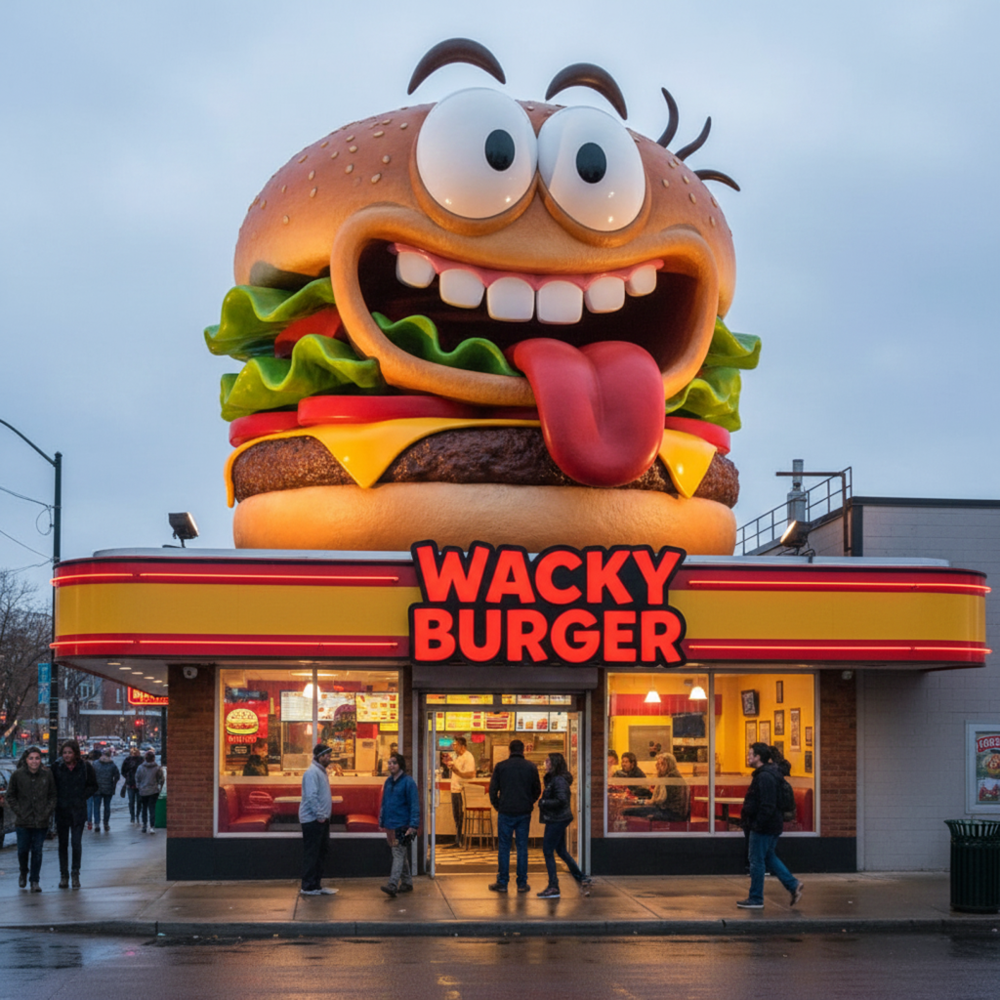
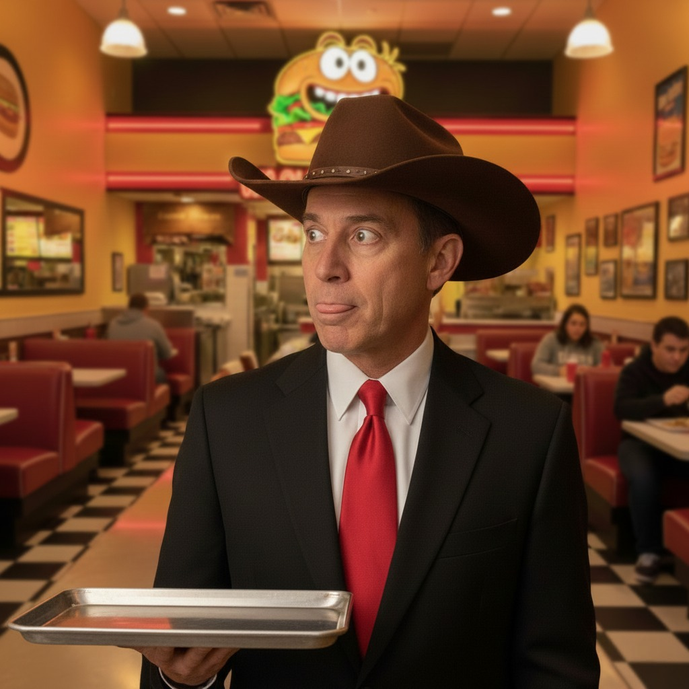
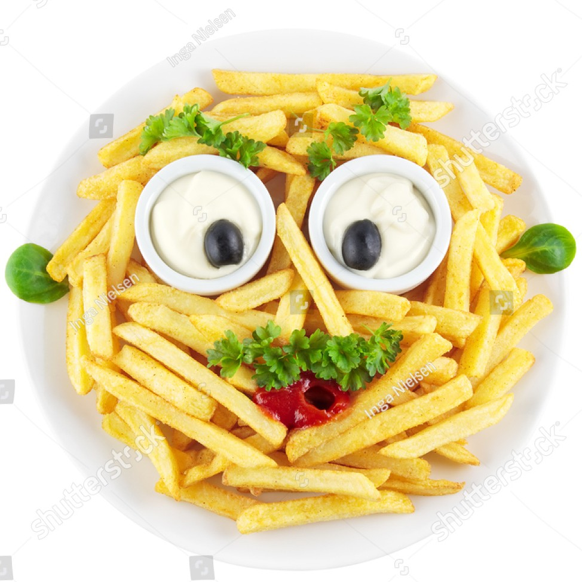
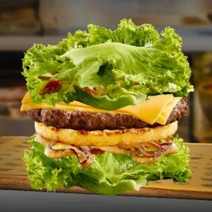
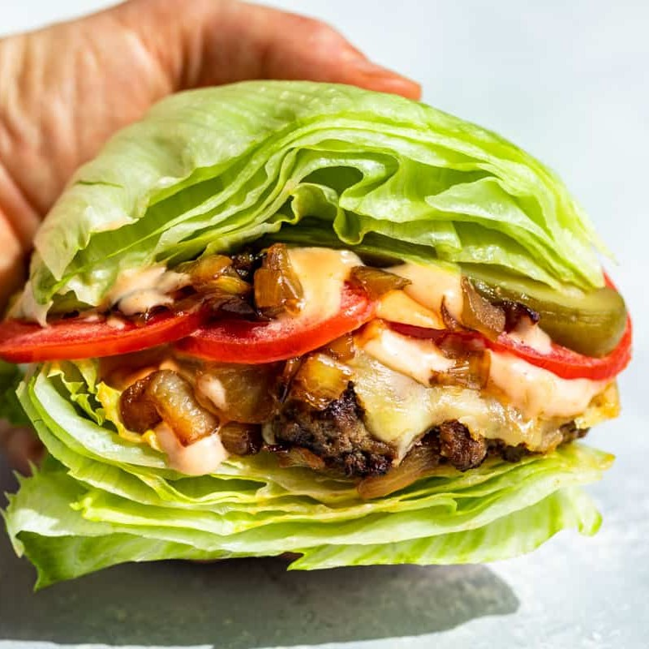
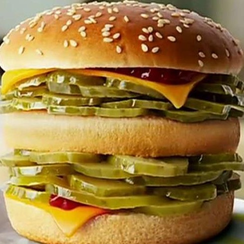
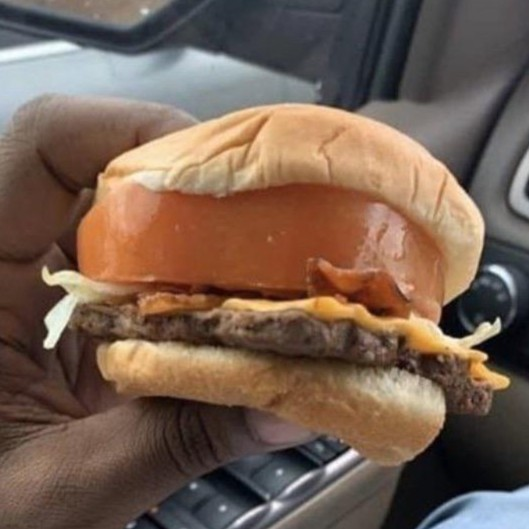

What is Wacky Burger About?
Wacky Burger is mostly about the wackyness that burgers can get. We can make you a burger with only letuce. Burgers that have too much tomatos. Burgers that are giant that no other food place would do. Wacky Burger is proud for being the way it is today. Being a simple yet wacky Burger Resturant that you can go out and eat at. Which you can even surprise your friends with the burger you got!
How It Started

Wacky Burger started out in 1984.
Serving up burgers to people that wanted them.
The burgers were grilled and made carefully.
But basically Wacky Burger originated from Texas,
Founded by John Wacky Sr.
His first food item he ever made. Wacky Burger Jr.
Was a success. Then he proceeded to make French Fries like no other place could do.
You can say they are Freaking good french fries.
Wacky Burger has become a proud Burger Resturant ever sense then.
Suriving all the way till current date.
The Founder Himself

The founder grew up in texas,
where his family grilled outside often,
making the best burgers he had ever eaten.
Eventually he grew older, donned a cowboy hat,
and wanted to make the burger he grew up with.
He wanted to share his knowledge, the taste,
and wackyness that a burger can have.
What Our Food Is About
Wacky Burger Jr.

The classic Wacky Burger food item, Wacky Burger Jr. is based on Mr. Wacky's son, John Wacky Jr. He thought it would be nice to name the first burger he created for the restruant after his son who has a love for burgers. The wackiness of the burger also perfectly captures the same energy of John Jr.
Freaky French Fries
When he had French Fries back when he was a kid. It wasnt to his standards. To him it tasted bland, not good, mid. So he made french fries of his own with potatos he grown outside. Carefully cutting them into the fries shape before popping off with some ideas he had. This is what made Freaky Fries the way it is today.
Yummers Lettuce Burger
Mr. Wacky is a huge fan of The Boys while his son is a huge fan of lettuce on his burger and thinks it is, and I quote, "yummers". Mr. Wacky found this hilarious and started getting a bit creative by utilizing 200% fresh lettuce that has been locally sourced from a nearby farm owned by Owem Yummers. Replacing the burger buns entirely. Sure it is just regular looking burger lettuce, as opposed to iceberg lettuce. However, that is the point, he thought it would be totally wacky to make a burger made up of mostly lettuce.
Titanic Burger
It may look like just a normal iceberg burger, but it isn't. The Titanic Burger is a giant and ice cold burger that Mr. Wacky made as a "challenge item" where you have to eat this cold giant in under a minute. The reward for the item is a hat that reads, "I Sank the Titanic (Burger)". It is a (not so) hot item at Wacky Burger that requires pure courage to eat such a beast of a burger.
Pickley Burger
Mr. Wacky noticed how many people go absolutely bonkers over pickles, but also knows how much people hate pickles on their burger. This caused Mr. Wacky to make the Pickely Burger and aim it towards Pickle lovers and in spite of those who hate pickles. However, unlike the Tomato Hater Burger, the Pickely Burger is meant to be a more lighthearted take because people tend to love their pickles more than their tomatos. Additionally, pickles are good to have on a burger as they are contain vitamin C from their many antioxidants.
Tomater Hater Burger
When he saw people not wanting tomatos on the burger. While others really wanted tomatos on their burger. So he thought of making something silly. The Tomater Hater Burger! This burger if for the people who love tomatos! And to show people who hate tomatos too! Show your friends this burger he thought.